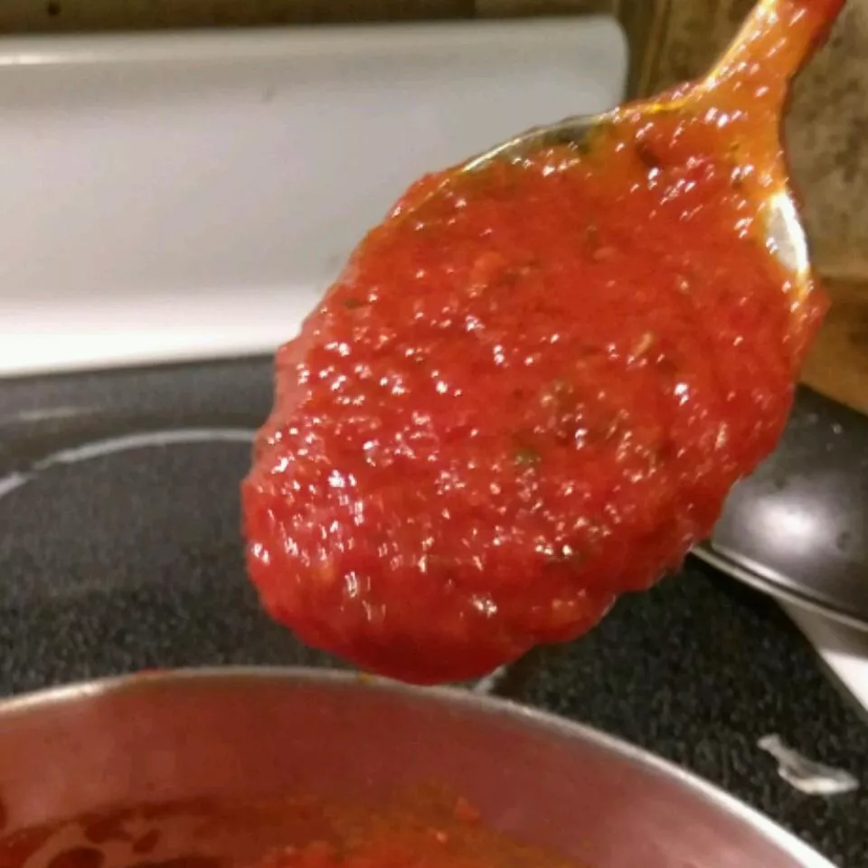

Easy Homemade Pizza Sauce

Description
Learn how to make pizza sauce like at pizzerias.
The thickness of this homemade pizza sauce is regulated by the amount of water used;
it should be somewhat viscous.
Ingredients
- 1 ½ cups water
- 1 (6 ounce) can tomato paste
- ⅓ cup extra virgin olive oil
- 2 cloves garlic, minced
- ½ tablespoon dried oregano
- ½ tablespoon dried basil
- ½ teaspoon dried rosemary, crushed
- salt and ground black pepper to taste
Steps
- Mix together water, tomato paste, and olive oil in a large bowl or jar.
Add garlic, oregano, basil, rosemary, salt, and pepper; mix well.
- Let sauce stand for several hours to let flavors blend. No cooking is necessary;
just spread on dough.